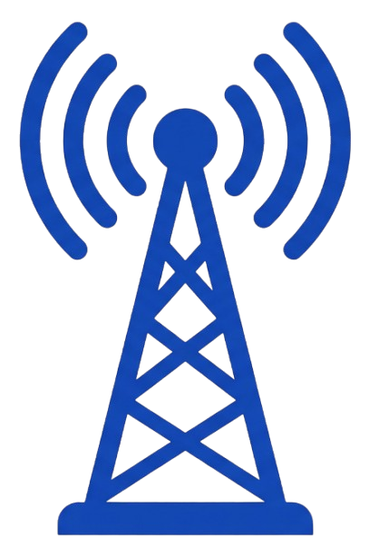
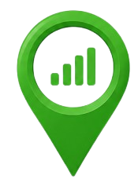
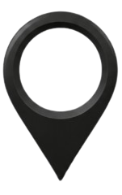
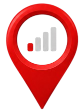

<!DOCTYPE html>
<html>
<head>
  <title>Mapa de Sinal</title>
  <meta charset="utf-8" />
  <meta name="viewport" content="width=device-width, initial-scale=1.0">

  <link rel="stylesheet" href="https://unpkg.com/leaflet/dist/leaflet.css" />
  <script src="https://unpkg.com/leaflet/dist/leaflet.js"></script>

  <link rel="stylesheet" href="https://unpkg.com/leaflet.markercluster/dist/MarkerCluster.css" />
  <link rel="stylesheet" href="https://unpkg.com/leaflet.markercluster/dist/MarkerCluster.Default.css" />
  <script src="https://unpkg.com/leaflet.markercluster/dist/leaflet.markercluster.js"></script>

  <style>
    #map { height: 100vh; }

    .legend {
      background: white;
      padding: 10px;
      border-radius: 8px;
      box-shadow: 0 0 10px rgba(0,0,0,0.2);
      font-size: 14px;
    }

    .legend div {
      cursor: pointer;
      margin: 4px 0;
    }

    .legend img {
      width: 18px;
      margin-right: 6px;
    }
  </style>
</head>
<body>

<div id="map"></div>

<script>

const map = L.map('map').setView([-28.82, -49.27], 13);

L.tileLayer('https://{s}.tile.openstreetmap.org/{z}/{x}/{y}.png').addTo(map);

// ÍCONES
function getIcon(signal) {
  const mapIcons = {
    "0":     "marker-black.png",
    "1":     "marker-red.png",
    "2":     "marker-orange.png",
    "3":     "marker-green.png",
    "TORRE": "tower.png"
  };

  return L.icon({
    iconUrl: mapIcons[signal] || "marker-green.png",
    iconSize: [32, 32],
    iconAnchor: [16, 32]
  });
}

// CLUSTER DE TORRES CUSTOMIZADO
function criarClusterTorres() {
  return L.markerClusterGroup({
    iconCreateFunction: function(cluster) {
      const count = cluster.getChildCount();
      return L.divIcon({
        html: `<div style="position:relative; display:inline-block;">
                 
                 <span style="
                   position: absolute;
                   top: -6px;
                   right: -8px;
                   background: #1a3a5c;
                   color: white;
                   border-radius: 50%;
                   padding: 1px 5px;
                   font-size: 11px;
                   font-weight: bold;
                   line-height: 16px;
                   min-width: 16px;
                   text-align: center;
                   box-shadow: 0 0 3px rgba(0,0,0,0.4);
                 ">${count}</span>
               </div>`,
        className: '',
        iconSize: [32, 32],
        iconAnchor: [16, 32]
      });
    }
  });
}

// LAYERS
let vivoSinal  = L.layerGroup().addTo(map);
let vivoTorres = criarClusterTorres(); vivoTorres.addTo(map);
let timSinal   = L.layerGroup().addTo(map);
let timTorres  = criarClusterTorres(); timTorres.addTo(map);

// CAMADAS
const overlays = {
  "VIVO Sinal":  vivoSinal,
  "VIVO Torre":  vivoTorres,
  "TIM Sinal":   timSinal,
  "TIM Torre":   timTorres
};

L.control.layers(null, overlays).addTo(map);

// FILTRO SINAL
let filtroAtivo = null;

// CSV LOADER
async function loadCSV(url, layerSinal, layerTorres, rede) {

  const res  = await fetch(url + '?' + Date.now());
  const text = await res.text();
  const lines = text.split(/\r?\n/);

  for (let i = 1; i < lines.length; i++) {

    let line = lines[i].trim();
    if (!line) continue;

    const parts = line.match(/(".*?"|[^",]+)(?=\s*,|\s*$)/g);
    if (!parts || parts.length < 4) continue;

    const coords = parts[0].replace(/"/g, '').split(",");
    const sinal  = parts[1].trim();

    if (filtroAtivo && sinal !== filtroAtivo) continue;

    const lat = parseFloat(coords[0]);
    const lng = parseFloat(coords[1]);

    if (isNaN(lat) || isNaN(lng)) continue;

    const marker = L.marker([lat, lng], {
      icon: getIcon(sinal)
    }).bindPopup(`${rede} - ${sinal === "TORRE" ? "Torre" : "Sinal " + sinal}`);

    if (sinal === "TORRE") {
      layerTorres.addLayer(marker);
    } else {
      layerSinal.addLayer(marker);
    }
  }
}

// ATUALIZAR
function atualizar() {

  vivoSinal.clearLayers();
  timSinal.clearLayers();

  // Recriar clusters de torres
  map.removeLayer(vivoTorres);
  map.removeLayer(timTorres);

  vivoTorres = criarClusterTorres();
  timTorres  = criarClusterTorres();

  // Só adiciona ao mapa se o overlay ainda estiver ativo
  overlays["VIVO Torre"] = vivoTorres;
  overlays["TIM Torre"]  = timTorres;

  vivoTorres.addTo(map);
  timTorres.addTo(map);

  loadCSV('vivo.csv', vivoSinal, vivoTorres, 'VIVO');
  loadCSV('tim.csv',  timSinal,  timTorres,  'TIM');
}

// LEGENDA (SINAL)
const legend = L.control({ position: 'bottomright' });

legend.onAdd = function() {
  const div = L.DomUtil.create('div', 'legend');

  div.innerHTML = `
    <b>Sinal</b><br>
    <div onclick="filtrar(null)">         Todos</div>
    <div onclick="filtrar('0')">          Sem sinal</div>
    <div onclick="filtrar('1')">            Baixo</div>
    <div onclick="filtrar('2')">          Médio</div>
    <div onclick="filtrar('3')">          Total</div>
    <div onclick="filtrar('TORRE')">             Torre</div>
  `;

  return div;
};

legend.addTo(map);

// FILTRO
window.filtrar = function(v) {
  filtroAtivo = v;
  atualizar();
};

// LOOP
setInterval(atualizar, 30000);

atualizar();

</script>

</body>
</html>
